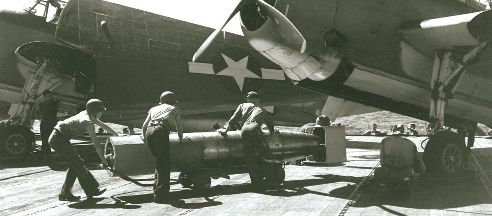
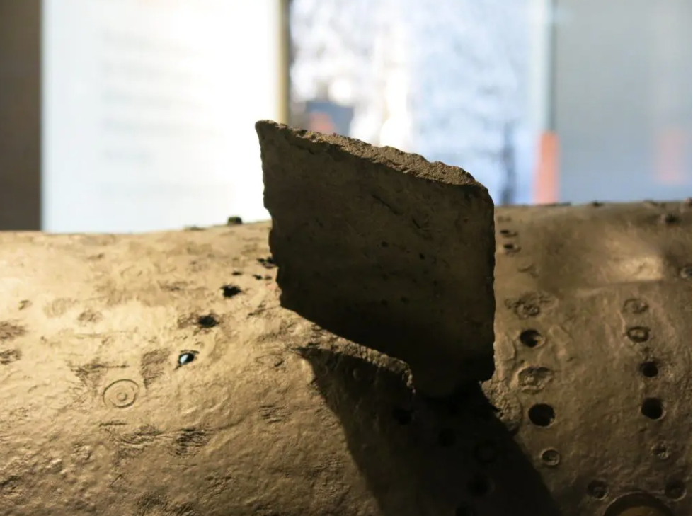
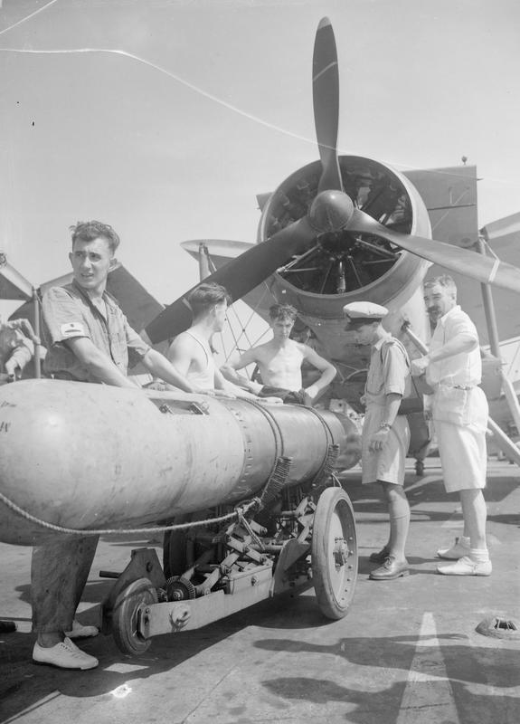
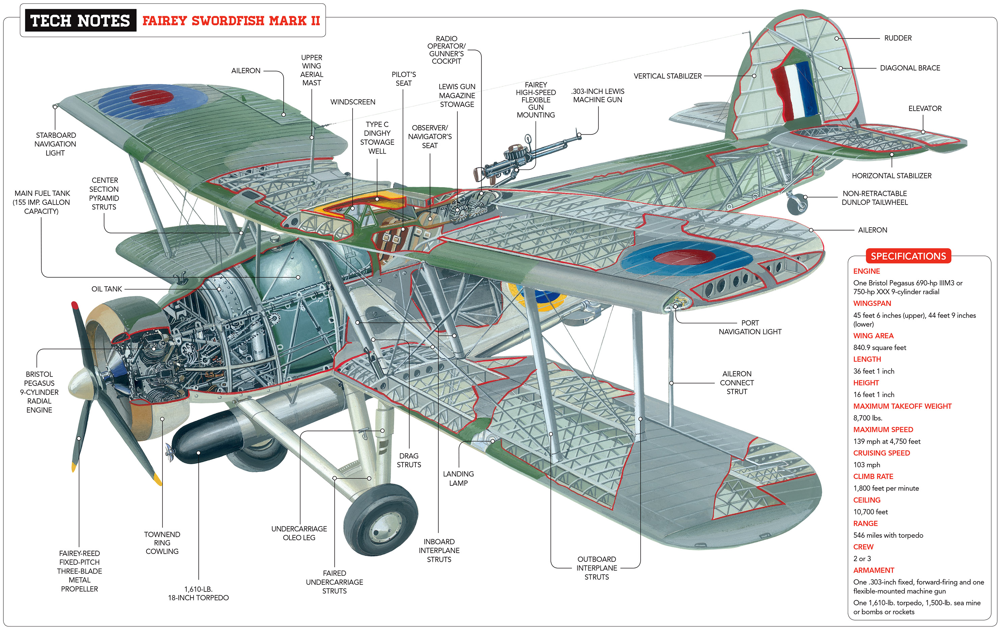
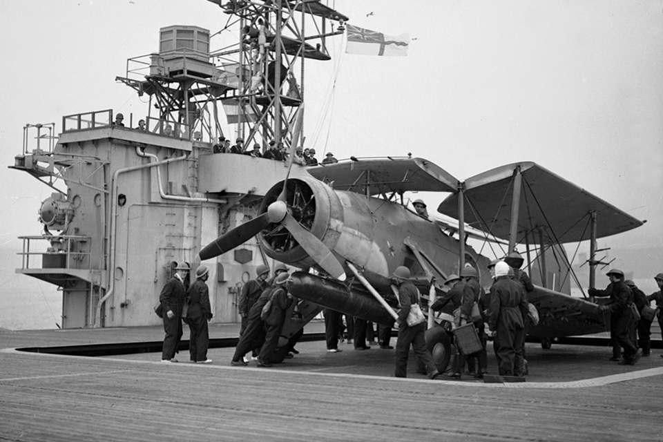

WW2 중 항모에서의 야간 작전 (9) - 대체 어떻게 한 거야?
게시: 2025-04-17T08:32:09+09:00
<깊이와 다이빙> 일단 낮이건 밤이건 항구에 정박한 전함들을 공격하는 것에는 본질적인 문제가 있었음. 일단 수심. 항구는 당연히 수심이 대양보다는 무척 얕음. 폭탄으로 공격할 때는 문제가 안될 테지만 어뢰로 공격하자니 이게 심각한 문제였음. 전에도 언급했듯이, 보통 항공어뢰는 투하되면 일단 21m 이상의 깊이로 잠수했다가 목표를 향해 돌진하면서 수심 유지 장치에 의해 미리 정해둔 심도로 조금씩 떠오르게 되어 있음. 그런데 타란토 항구에서도 전함들이 정박하는 계류장의 평균 수심은 15m에 불과. 결국 평소 하던 대로 어뢰를 투하하면 그 어뢰들은 모조리 타란토 항구의 진흙바닥에 쳐박히게 된다는 소리. 이 문제는 1941년 12월 진주만을 습격했던 일본해군 뇌격기들도 직면했던 문제. 흔히 일본해군은 그 문제를 타란토 습격 때 영국해군이 사용한 방법을 흉내 내어, 어뢰 꼬리 부분에 나무판자로 만든 커다란 지느러미를 덧대어 달아 해결했다고 알려짐. 실제로 미해군에서는 진주만 습격 이후 공기역학적인 분석 없이 그냥 짐작만으로 그 커다란 나무 지느러미가 어뢰로 하여금 착수할 때 머리를 쳐들게 함으로써 너무 깊게 다이빙하는 것을 막는 장치라고 생각했음. 진주만 습격에 대한 의회 청문회에서도 미해군의 Kimmel 제독은 그 지느러미에 대해 '우리 해군성에서도 그런 문제를 해결하기 위해 무던히도 애썼으나 아무도 생각해내지 못했던 것인데 일본해군이 해냈다' 라고 증언했음.

("그 좋은 것을 일본놈들만 쓰게 할 수는 없지!" 실제로 미해군도 곧 항공어뢰의 본체와 꼬리에 저렇게 착수할 때 부서져 나가는 목판을 덧대는 것이 표준이 되었음. 그러나 미해군이 저걸 덧댄 것은 어뢰가 너무 깊게 다이빙하는 것을 막기 위한 것이 아니라, 투하 및 착수할 때 어뢰에 가해지는 진동과 충격을 줄여주기 위한 것. 사진은 경항모 USS San Jacinto (CVL-30) 갑판에서 Avenger 뇌격기에 장착되는 Mk 13 어뢰의 모습.)
그러나 사실은 매우 달랐음. 일본해군이 진주만 습격을 위해 개조한 Type 91 항공어뢰에는 실제로 커다란 나무 지느러미가 달려 있었음. 하지만 그 나무 지느러미는 어뢰가 착수할 때의 충격 등의 문제를 해결하기 위해 달았던 것이고, 그건 착수할 때 충격으로 부서져 나가도록 되어 있었음. 그리고 그 나무 지느러미의 아이디어를 준 것은 다름 아닌 이탈리아 해군. 전에도 언급한 SM.79 폭격기에 어뢰를 달아보니 어뢰가 착수할 때 문제가 있어서 이탈리아 해군은 그걸 해결하기 위해 어뢰에 착탈식 나무 지느러미를 달았고, 이탈리아에 와 있던 일본해군 장교들이 그걸 배워 갔던 것. 어뢰가 너무 깊게 착수하지 않도록 하기 위한 핵심 개조는 의외로 어뢰 중간에 달려 있던 2개의 작은 안정판. 이는 간단해보이지만 실은 꽤 복잡한 자이로스코프 기반의 지느러미(gyroscopically driven ailerons)로서, 이 작은 지느러미의 역할은 투하된 어뢰가 착수할 때 좌우로 회전하지 않도록 하는 것. 어뢰는 기본적인 무게 중심도 그렇고 꼬리의 방향타와 안정판, 스크루 등으로 인해 착수할 때 머리(nose)부터 들어가는 것이 보통. 그리고 길쭉한 물체가 머리부터 들어가면 당연히 더 깊게 다이빙하게 됨. 그래서 깊게 들어가는 것을 막으려면 어떻게 해서든 어뢰가 착수할 때 머리를 쳐들게 하여 가급적 수평에 가깝게 들어가도록 하는 것이 중요. 일본해군이 택한 방식은 착수할 때는 어쩔 수 없지만, 입수하자마자 어뢰가 곧장 머리를 쳐들고 위로 향하도록 하는 방법을 채택. 그걸 가능하게 해주는 것이 꼬리의 수평타인데, 문제는 어뢰가 입수 직후 좌우로 회전하는 경향이 많았던 것. 아직 제어 컴퓨터가 없던 시절 어뢰가 그렇게 좌우로 회전(roll)하면 어뢰의 머리를 쳐들게 해주는 수평타가 제 역할을 하지 못함. 그래서 일본해군은 어뢰가 입수 직후 좌우로 회전하지 않도록 중간에 자이로스코프에 의해 조정되는 작은 지느러미를 달았던 것.

(이건이 일본해군 항공어뢰의 비밀, gyroscopically driven aileron.) 그런나 이 모든 것은 당시엔 당연히 기밀 사항이었고, 미해군에서도 한참동안이나 '일본해군은 이탈리아에 파견 나가있던 해군무관을 통해 타란토 기습 때 영국해군이 사용한 방식을 이탈리아 해군으로부터 전해듣고 그걸 응용하여 진주만 습격에 써먹었다'고 알고 있었음. 이탈리아 주재 일본 대사관 소속 일본해군 장교가 타란토 습격 이후 타란토를 방문하고 이탈리아 해군으로부터 자세한 브리핑을 받아가며 많은 것을 배워간 것은 사실. 그러나 정작 영국해군은 어뢰가 너무 깊게 다이빙하지 않도록 하기 위해 전혀 다른 방식을 썼음. 이건 영국인다운 질박함과 실용성, 거기에 더해 소드피쉬 뇌격기만의 특성을 100% 활용하여 만든 매우 간단한 솔루션. 바로 작은 드럼통에 감긴 와이어를 어뢰 머리에 연결하는 것. 먼저 소드피쉬의 앞쪽 아래 부분에 작은 드럼통처럼 생긴 실타래를 가로로 장착. 거기에는 철사를 돌돌 감아놓음. 그리고 그 철사의 끝을 어뢰 머리에 후크를 달아 묶음. 그 상태로 소드피쉬가 초저공 비행을 하며 어뢰를 투하하면, 어뢰의 머리에 연결된 와이어가 소드피쉬의 드럼형 실타래를 회전시키면서 풀려나오는데 그 저항으로 인해 어뢰는 착수할 때까지 코가 꿰인 물고기처럼 소드피쉬에 의해 약간 머리를 쳐들게 됨. 이후 착수를 하고, 와이어가 실타래에서 다 풀려 떨어져 나가면 소드피쉬도 자유롭게 회피 비행을 할 수 있고 어뢰는 (비록 지저분하게 긴 철사를 머리부터 늘어뜨린 채이지만) 목표물을 향해 돌격할 수 있는 것.

(사진은 HMS Illustrious 에서 어뢰 장착 훈련을 하는 영국 수병들의 모습. 저 어뢰의 머리로부터 늘어진 밧줄이 타란토 항구 습격에 쓰였던 장치 같지는 않음.) <오직 소드피쉬에서만 가능> 왜 다른 해군에서는 이런 훨씬 간단한 솔루션을 생각해내지 못헀을까? 가장 큰 이유는 항구에 정박한 적함에 뇌격을 시도하는 미친 짓은 날이면 날마다 할 수 있는 작전이 아니므로 굳이 그런 것이 필요하지 않았기 때문. 그리고 무시못할 부분이 바로 Fairey Swordfish의 특징 때문. 소드피쉬는 흔히 오해하는 것과는 달리 WW1 시절에 개발된 오래된 항공기가 아니라 첫비행한지 얼마 안된 당시 최신예기 중의 하나였고, 큰 폭탄 작은 폭탄 어뢰 폭뢰 등등 온갖 다양한 무기를 잔뜩 장착할 수 있는 3인승 대형 항공기였음. 귀엽게 생긴 복엽기를 생각하고 처음 이 항공기를 접했던 다른 나라 해군들은 이 항공기가 생각보다 매우 크다는 사실에 깜짝 놀라곤 했다고. 실제로 소드피쉬는 길이가 10.87 m, 날개폭이 13.87 m로서, 미해군의 주력 함재 폭격기였던 SBD Dauntless (10.0902 m x 12.65873 m)보다 더 큼. 게다가 또 놀랄 부분은... 애초에 소드피쉬는 뇌격도 수행하지만 급강하 폭격도 수행할 수 있도록 설계된 폭격기라는 점. 이는 이 폭격기를 개발할 때 구매 의사를 밝혔던 그리스 공군의 주문 사항이었다고. 실제로 급강하 폭격을 수행할 수 있을 정도로 튼튼한 구조를 가지고 있었음.

(소드피쉬의 영국해군 내 별명은 주부의 그물 장바구니를 뜻하는 'stringbag'. 이는 복엽기 특성상 두 날개 사이를 어지럽게 연결하는 많은 지지대와 와이어들 때문이 아니라, 어떤 장교가 이 폭격기의 엄청난 폭장량을 보고 놀라서 '어떤 주부의 장바구니에도 이보다 더 많이 쑤셔박을 수는 없을 것'이라고 언급한 것에서 유래.)

(그런데 그렇게 크면서도 날개를 접으면 항공모함의 엘리베이터와 격납고에 쏙 들어갈 수 있는, 정말 다재다능하고 쓸모가 많은 폭격기.) 그런데 그런 대형 폭격기라면 당연히 작전반경도 넓을 것 아닌가? 아니었음. 소드피쉬의 항속거리는 (비록 이건 연료를 가득 채우고 어뢰까지 장착한 상태에서의 항속거리이긴 하지만) 840 km에 불과. 이는 돈틀리스 폭격기의 전투 반경인 1,794 km에 비하면 너무 짧은 거리. 그럼에도 불구하고 또 이해가 안 가는 것이, 소드피쉬는 비행 지속 시간은 엄청나게 길었음. 무려 5시간 반 동안이나 비행이 가능. 이제 이해가 가시는지? 그러함. 비행 시간은 길지만 소드피쉬가 너무 느렸기 때문에 항속거리가 짧았던 것. 이건 복엽기의 한계. 그렇게 더 느릴 수가 없을 정도로 느렸기 때문에 배에 큼직한 드럼형 실타래를 덧대고도 괜찮았던 것. 일본해군이나 미해군의 뇌격기에 그런 물건을 달라고 했으면 '가뜩이나 느린 뇌격기를 아예 죽일 작정이냐'라며 반대가 심했을 것. 여기서 나오는 문제. 그렇게 느린 소드피쉬로 어떻게 적 대공포 사격에서 살아남을 수 있지? 그래서 영국해군은 타란토 항구를 밤에 습격하기로 한 것임.